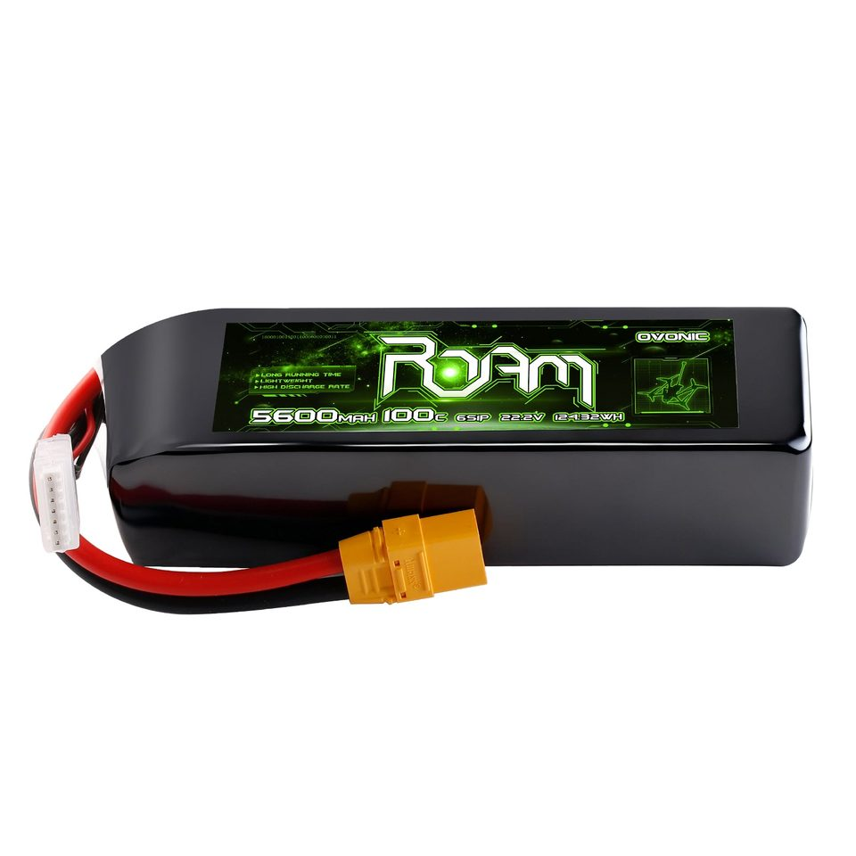
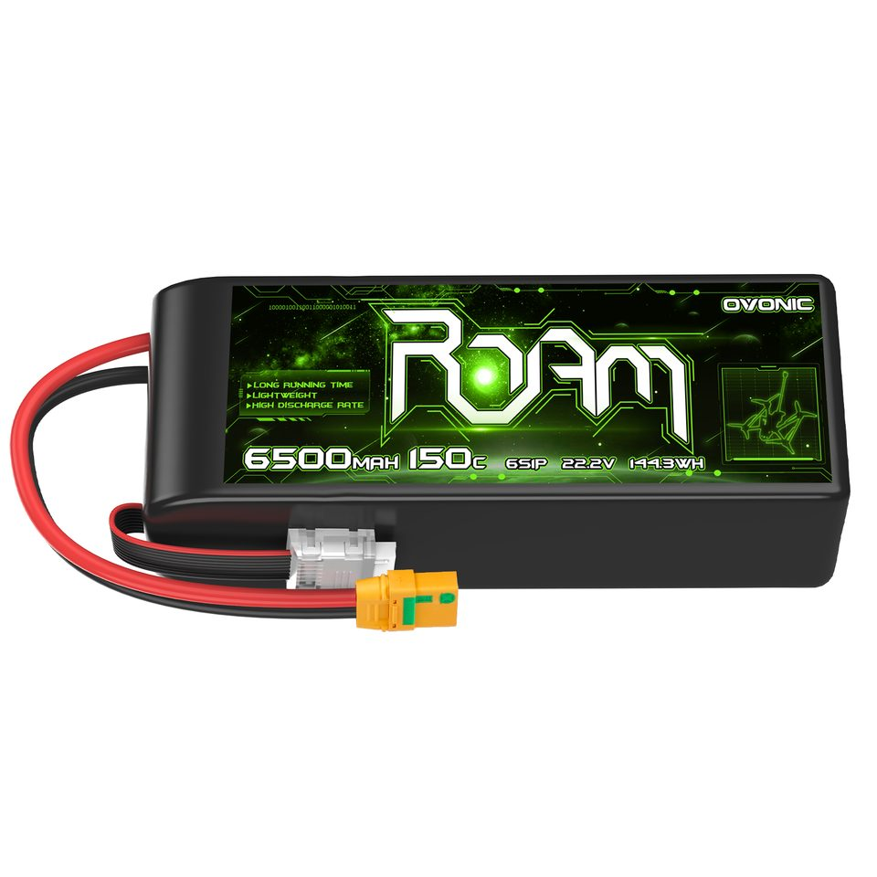

Teileliste: 10-Zoll-Build
Der kompakte Long-Range-Build auf Basis des Axisflying MANTA10 Lite: Frame, Motoren, Stack, Akku, Ladegerät, Funk und Videoübertragung mit direkten Bezugsquellen. Die größeren Schwesterprojekte stehen in der Teileliste 13-Zoll-Build 1 und der Teileliste 15-Zoll-Build 1.
Teileliste · Long-Range & Heavy-Lift · Lesezeit ca. 8 Min · Stand: August 2026
Kurz gesagt
Diese Seite ist die Einkaufsliste für unseren kompakten Long-Range-Build: kleiner als der 13-Zoll-Build 1, auf 10 Zoll und 6S, mit dem Manta-Frame und den Motoren von Axisflying. Sie ist ein Startpunkt, kein garantiert kompatibles Komplett-Set: Motor-KV, ESC-Strom, Lochbild und Props müssen zur Zellenzahl und zum Einsatzprofil passen. Wer neu im FPV ist, spart mit unserer Einsteiger-Beratung vor dem ersten Bestellklick meist mehr, als sie kostet.
Anzeige: Die mit (Anzeige) markierten Links sind Affiliate-Links zu unseren Partnern. Kaufst du darüber, erhalten wir eine Provision, für dich ändert sich am Preis nichts. Empfohlen wird nur, was in unseren Ratgebern fachlich hergeleitet ist.
Übersicht
| Kategorie | Unsere Auswahl | Ratgeber dazu |
|---|---|---|
| Frame (Carbon) | Axisflying MANTA10 Lite Frame Kit | Carbon verstehen |
| Motoren · Option 1 | Axisflying AE3115 (900KV) | Wo der Schub herkommt |
| Motoren · Option 2 | DarwinFPV 3115 (900KV) | |
| Motoren · Option 3 | T-Motor VELOX V3115 (900KV) | |
| Props · Option 1 | HQProp MacroQuad 10x5.5x3 | |
| Props · Option 2 | Gemfan 1045-3 | |
| FC/ESC-Stack | SpeedyBee F405 V5 (OX32 55A) | Ratgeber folgt |
| Akku · Option 1 | Ovonic ROAM 6S 5.600 mAh (100C) | Du und dein Akku |
| Akku · Option 2 | Ovonic ROAM 6S 6.500 mAh (150C) | |
| Ladegerät | ISDT Q8 Max | Der Akku und sein Ladegerät |
| Funk: Sender (TX) · Option 1 | RadioMaster GX15 | Funk & Kommunikation |
| Funk: Sender (TX) · Option 2 | RadioMaster TX16S MKII | |
| Funk: Empfänger (RX) · Option 1 | HGLRC ELRS Gemini Dual | |
| Funk: Empfänger (RX) · Option 2 | RadioMaster RP4TD | |
| Videoübertragung · Option 1 | DJI O4 Air Unit Pro | Videoübertragung |
| Videoübertragung · Option 2 | Walksnail Avatar HD GT2 | |
| VTX-Antennen (2 Stück) | HGLRC 5.8G Hammer Dual (LHCP, SMA) | |
| Antennen-Pigtails (2 Stück) | TBS U.FL auf SMA (DJI) bzw. MMCX auf SMA (Walksnail) | |
| GPS | HGLRC M100 Pro mit Kompass + ViFly GPS Mate | Funk & Kommunikation |
1. Frame: die Carbon-Basis
Basis dieses Builds ist das MANTA10 Lite Frame Kit von Axisflying: True-X-Geometrie mit 440 mm Radstand, T700-Carbon, 7 mm starke Arme und Props bis 10 Zoll; die Zuladung gibt Axisflying mit 2,5 bis 3 kg an. Was gutes Carbon von schlechtem unterscheidet, steht im Carbon-Ratgeber.
Eine 13-Zoll-Manta gibt es übrigens auch, aber nicht als Frame-Kit: Die Manta 13 X Lite verkauft Axisflying (Stand August 2026) nur als fertig aufgebaute BNF-Drohne. Wer die 13-/15-Zoll-Klasse selbst bauen will, findet die Frames in der Teileliste 13-Zoll-Build 1 und der Teileliste 15-Zoll-Build 1.
➜ MANTA10 Lite Frame Kit bei Axisflying ansehen
➜ Manta 13 X Lite (fertige BNF-Drohne) bei Axisflying ansehen
2. Motoren
Zum Frame gehört der hauseigene Axisflying AE3115 mit 900KV: freigegeben für 3S bis 6S und vom Hersteller für Long-Range- und Heavy-Lift-Builds von 8 bis 10 Zoll positioniert, also genau für das MANTA10-Deck. Zwei bewährte Alternativen in derselben Klasse: der DarwinFPV 3115 (900KV), laut Hersteller für 9-10-Zoll-Heavy-Payload-Builds entwickelt, mit bis zu 4,5 kg Schub pro Motor, und der T-Motor VELOX V3115 (900KV, 4S bis 6S), den T-Motor für 9-11-Zoll-Cinematic-Builds auslegt und mit rund 5 kg Spitzenschub angibt.
Für den späteren Schritt auf 13 Zoll hat Axisflying den AZ4320 (420KV, 6S bis 8S; die vom Hersteller genannten 6.130 g Schub je Motor gelten allerdings mit einem 15-Zoll-Prop) im Programm; das T-Motor-Gegenstück dazu, den MN4012 KV400, findest du in der Teileliste 13-Zoll-Build 1. Die KV-Zahl muss zur Zellenzahl deines Akkus passen; das rechnen wir in der Custom-Build-Beratung für deinen Build durch.
➜ Axisflying AE3115 900KV bei Axisflying ansehen
➜ DarwinFPV 3115 Motor ansehen (Anzeige)
➜ T-Motor VELOX V3115 bei T-Hobby (T-Motor-FPV-Shop) ansehen
➜ Axisflying AZ4320 420KV (13 Zoll) bei Axisflying ansehen
3. Props
Auf die 3115er-Motoren gehören 10-Zoll-Props aus der MacroQuad-Serie von HQProp, die genau für diese Klasse großer Quads entwickelt ist: Die MacroQuad 10x5.5x3 ist ein 3-Blatt-Prop aus glasfaserverstärktem Nylon mit 5-mm-Wellenaufnahme, dem Standard der 3115-Klasse; das Set enthält je zwei CW- und CCW-Props. Wer Effizienz vor Vortrieb stellt, nimmt die flachere 10x4.5x3 aus derselben Serie: weniger Steigung heißt weniger Last und weniger Strom.
Eine bewährte Alternative ist der Gemfan 1045-3 (10x4.5x3): ebenfalls ein 3-Blatt-Prop aus glasfaserverstärktem Nylon mit 5-mm-Bohrung, den Gemfan für Langstreckenflüge mit stabilem Flugbild auslegt. Beim Bestellen auf den Lieferumfang achten: Der Gemfan kommt paarweise (1x CW + 1x CCW), für einen kompletten Quad brauchst du also zwei Pakete; das MacroQuad-Set enthält dagegen schon alle vier Props.
➜ HQProp MacroQuad 10x5.5x3 (4er-Set) bei FPV24 ansehen (Anzeige)
➜ Gemfan 1045-3 (1x CW + 1x CCW) bei FPV24 ansehen (Anzeige)
4. Flight Controller & ESC
Für einen reinen 10-Zoll-Long-Range-Build auf 6S reicht ein klassischer 30,5er-Stack: Der SpeedyBee F405 V5 (OX32 55A 4-in-1) kombiniert den F405-Flight-Controller mit ICM42688-Gyro und Bluetooth-Konfiguration per App mit einem ESC, der 55 A dauerhaft (70 A Burst) je Motor liefert, freigegeben für 3S bis 6S. Sein 30,5-x-30,5-mm-Lochbild passt zur Flytower-Bohrung, die Axisflying für das MANTA10 Lite angibt. Der beliebte Vorgänger F405 V4 ist im Fachhandel weitgehend ausgelaufen; der V5 ersetzt ihn.
➜ SpeedyBee F405 V5 Stack (OX32 55A) bei SpeedyBee ansehen
➜ SpeedyBee-Sortiment bei FPV24 ansehen (Anzeige)
5. Akku
Der AE3115 ist bis 6S freigegeben, dieser Build fliegt also mit 6S, und zwar mit einem dicken Pack: ab 5.000 mAh aufwärts, denn bei Long Range ist die Kapazität die Reichweite. Unser Pick ist der ROAM 6S mit 5.600 mAh (100C, XT90); die Option 2 mit mehr Reichweite ist der ROAM 6S mit 6.500 mAh (150C, XT90-S-Anti-Spark), den Ampow für 6-10-Zoll-Long-Range-Builds führt. Wer noch mehr Ausdauer will, findet in der ROAM-Serie 6S-Packs bis 8.000 mAh, mit Versand aus EU-Lager (Akkus sind Gefahrgut, Direktimport lohnt nicht). Welche Kapazität zu welcher Abflugmasse passt und was die C-Rate bedeutet, steht im Akku-Ratgeber.
➜ Option 1: Ovonic ROAM 6S 5.600 mAh (100C, XT90) bei Ampow ansehen (Anzeige)
➜ Option 2: Ovonic ROAM 6S 6.500 mAh (150C, XT90-S) bei Ampow ansehen (Anzeige)
➜ Alle Ovonic ROAM 6S-Akkus bei Ampow ansehen (Anzeige)


6. Ladegerät
Beim Ladegerät ändert sich gegenüber dem 13-Zoll-Build 1 nichts: Der ISDT Q8 Max lädt die 6S-Packs dieses Builds mit großen Reserven und wächst mit, falls später ein 8S-Build dazukommt. Warum wir zu ihm raten und welche Netzteil-Leistung dahinter stehen muss, erklärt der Ladegerät-Ratgeber.
➜ ISDT Q8 Max bei FPV24 ansehen (Anzeige)
7. Funk (RC-Link)
Der RC-Link ist identisch mit dem 13-Zoll-Build 1: ExpressLRS als System auf beiden Seiten. Die Herleitung samt Frequenz-Abwägung steht im Funk-Ratgeber.
Sender (TX)
Erste Wahl ist die ganz neue RadioMaster GX15: Sie bringt das Gemini-Prinzip auf die Senderseite, zwei 2,4-GHz-Transceiver mit je 250 mW senden gleichzeitig über zwei unterschiedlich polarisierte Antennen, und passt damit perfekt zum Gemini-Dual-Empfänger weiter unten. Dazu Hall-Gimbals der V6-Generation, ein 3,5-Zoll-Touchscreen und EdgeTX. Akku ist keiner dabei; sie nimmt einen 2S-LiPo, zwei 18650-Zellen (Halterung liegt bei) oder den 21700-Pack mit 5.000 mAh, den RadioMaster selbst als Zubehör listet.
Die bewährte Alternative ist die RadioMaster TX16S MKII mit internem ELRS-Modul, der Arbeitsstandard: Hall-Gimbals, großes Display, EdgeTX und genug Reserven für alles von 10 bis 15 Zoll.
➜ RadioMaster GX15 Dual-2,4-GHz-ELRS-Fernsteuerung bei FPV24 ansehen (Anzeige)
➜ RadioMaster 2S-21700-Akku 5.000 mAh (XT30) bei FPV24 ansehen (Anzeige)
➜ RadioMaster TX16S MKII mit internem ELRS bei FPV24 ansehen (Anzeige)
Empfänger (RX)
Im Copter gehört ein Diversity-Empfänger mit zwei Antennen verbaut; bei Long Range entscheidet der Empfänger über die letzte Meile Reichweite.
➜ HGLRC ExpressLRS Gemini Dual-Empfänger mit Antennen bei FPV24 ansehen (Anzeige)
➜ RadioMaster RP4TD True-Diversity-Empfänger bei FPV24 ansehen (Anzeige)
8. Videoübertragung
Für digitale Videoübertragung in dieser Klasse ist die DJI O4 Air Unit Pro der Standard: Reichweite, Aufnahmequalität und volle Spannungsfestigkeit für unsere Akku-Klassen (die kleine O4 Lite scheidet aus, sie verträgt nur bis 3S). Eine starke Alternative außerhalb des DJI-Ökosystems ist das Walksnail Avatar HD GT2 Kit: 1080p-Kamera plus VTX mit rund 22 ms Latenz, und die Brillenwahl bleibt offen. Den Vergleich mit Analog, Walksnail und HDZero findest du im Videoübertragungs-Ratgeber.
➜ DJI O4 Air Unit Pro bei FPV24 ansehen (Anzeige)
➜ Walksnail Avatar HD GT2 Kit (1080p, Dual-Antenne) bei n-factory.de ansehen
Antennen für den VTX
Die Serienantennen sind der Teil, den man zuerst tauscht. Unsere Empfehlung ist die HGLRC 5.8G Hammer Dual:
- 2 dBi, 5.645 bis 5.945 GHz
- 120 mm lang, 10 g leicht
- SMA-Stecker, Montageclip liegt bei
- einzeln verkauft, du brauchst zwei Stück, eine je Ausgang der VTX-Einheit
Entscheidend ist die Polarisation: Die Antenne ist LHCP, und LHCP ist bei beiden Systemen dieser Liste ab Werk gesetzt. DJI liefert die O4 Air Unit Pro mit LHCP-Antennen aus, Walksnail bestückt beim Avatar VTX und Brille ebenfalls mit LHCP. Beide Seiten müssen gleich drehen: LHCP am Copter und RHCP an der Brille kostet rund 20 dB, also den Großteil der Reichweite.
Dazu brauchst du den passenden Übergang: Die Hammer hat einen SMA-Stecker, die O4 Air Unit Pro einen I-PEX-Anschluss und der Walksnail-GT2-VTX einen MMCX-Anschluss. Also je ein Pigtail von I-PEX beziehungsweise MMCX auf SMA-Buchse, das am Rahmen sitzt.
➜ HGLRC 5.8G Hammer Dual (LHCP, SMA) bei FPV24 ansehen, 2 Stück nötig (Anzeige)
Adapterkabel für die Antennen
Damit die SMA-Antennen an die VTX-Einheit kommen, brauchst du je ein Pigtail, und zwar zwei Stück, eines je Antenne. Entscheidend ist das Ende am Rahmen: Es muss eine SMA-Buchse sein, weil die Hammer einen SMA-Stecker mit Pin hat.
Für die DJI O4 Air Unit Pro ist es ein Pigtail von U.FL auf SMA-Buchse; DJI verwendet dort einen IPEX-1-Anschluss, der mechanisch dem verbreiteten U.FL entspricht. Für den Walksnail-GT2-VTX brauchst du dagegen MMCX auf SMA-Buchse. Beide gibt es von TBS in passender Länge, das MMCX-Kabel auch mit gewinkeltem Stecker, was in engen Rahmen die Zugentlastung erleichtert. Beim Bestellen auf die Stückzahl achten: Diese Pigtails werden einzeln verkauft.
➜ Für DJI O4: TBS Pigtail U.FL auf SMA-Buchse (65 mm) bei FPV24 ansehen, 2 Stück nötig (Anzeige)
➜ Für Walksnail: TBS Pigtail MMCX auf SMA-Buchse (7,5 cm) bei FPV24 ansehen, 2 Stück nötig (Anzeige)
➜ Alternative: TBS Pigtail MMCX gewinkelt auf SMA (7 cm) bei FPV24 ansehen (Anzeige)
9. GPS
Ohne GPS kein Rescue-Mode und keine Heimkehr bei Failsafe; bei Long Range ist das Pflicht, nicht Komfort. Position und Verkabelung behandelt der Funk-Ratgeber. Sinnvolle Ergänzung: Der ViFly GPS Mate versorgt das GPS-Modul unabhängig vom Hauptakku, das bringt einen schnelleren Fix beim Start und einen integrierten 90-dB-Buzzer zum Wiederfinden nach dem Crash.
➜ HGLRC M100 Pro GPS mit Kompass bei FPV24 ansehen (Anzeige)
➜ ViFly GPS Mate bei n-factory.de ansehen
Lieber bauen lassen?
Verkabelung, Tuning und die Abstimmung aller Komponenten aufeinander (KV zur Zellenzahl, Stromreserven, Lochbild) sind bewusst nicht Teil dieser Liste: genau dort entscheidet sich, ob ein Build zuverlässig fliegt. Wir stellen dir die vollständige Konfiguration zusammen oder bauen den Copter komplett auf.
➜ Beratung für dein Custom-Build buchen
➜ Persönliche Beratung zu deinem Build anfragen
Diese Teileliste ersetzt keine individuelle technische Prüfung. Preise und Verfügbarkeit ändern sich; alle Angaben ohne Gewähr.
Änderungshistorie
- 16.08.2026 · AZ4320-Schubangabe eingeordnet (gilt mit 15-Zoll-Prop)
- 16.08.2026 · Lesbarkeit: Antennen-Daten als Aufzaehlung
- 16.08.2026 · Uebersicht: Ratgeber-Spalte wieder vollstaendig, Motoren und Props teilen sich einen Verweis
- 16.08.2026 · Antennen-Pigtails ergaenzt: U.FL auf SMA-Buchse fuer die DJI O4, MMCX auf SMA-Buchse fuer den Walksnail, je zwei Stueck
- 16.08.2026 · VTX-Antennen ergaenzt (HGLRC Hammer Dual LHCP, zwei Stueck) samt Polarisations- und Steckerhinweis
- 16.08.2026 · Verweise auf die umbenannte 13-Zoll-Liste und die neue 15-Zoll-Liste nachgezogen, Motorname MN4012 korrigiert
- 14.08.2026 · Produktfotos der Partner DarwinFPV und Ovonic zu den Kaufempfehlungen ergänzt (mit Bildfreigabe der Hersteller)
- 13.08.2026 · Motoren-Zeilen mit dem neuen Motoren-Ratgeber verlinkt
- 13.08.2026 · RadioMaster GX15 als erste Sender-Option aufgenommen, passender 21700-Akku verlinkt (Übersicht + Kapitel Funk)
- 13.08.2026 · Gemfan 1045-3 als zweite Prop-Option aufgenommen (Übersicht + Kapitel Props)
- 13.08.2026 · Übersicht: gleiche Ratgeber-Verweise benachbarter Zeilen zu einer Zelle zusammengefasst
- 13.08.2026 · Akku-Option 2 ergänzt: Ovonic ROAM 6S 6.500 mAh (150C, XT90-S) mit Affiliate-Link
- 13.08.2026 · T-Motor VELOX V3115 als Motor-Option 3 ergänzt (kaufbar bei T-Hobby, ersetzt den XMM3115-Hinweis), Übersichtstabelle mit eigener Zeile je Alternativ-Option
- 13.08.2026 · iFlight-Ausbau-Option beim Stack entfernt, Empfehlung ist allein der SpeedyBee F405 V5
- 13.08.2026 · Konkreter Akku-Pick ergänzt: Ovonic ROAM 6S 5.600 mAh (100C, XT90) mit Affiliate-Link
- 13.08.2026 · Ampow-Link auf die ROAM-Kollektion (6S/8S) umgezogen
- 13.08.2026 · Erstveröffentlichung: 10-Zoll-Build auf Axisflying-Manta-Basis, Stack-Empfehlung SpeedyBee F405 V5 mit iFlight-Ausbau-Option
Partner & Empfehlungen
Anzeige: Ausrüstung, die wir selbst nutzen und empfehlen können. Die folgenden Links sind Affiliate-Links; kaufst du darüber, erhalten wir eine Provision, für dich ändert sich am Preis nichts. Empfohlen wird nur, was uns fachlich überzeugt.
dracolabsDRACOLABSGERMANY